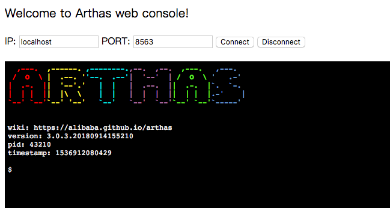

Web Console¶
通过浏览器连接arthas¶
Arthas目前支持Web Console，用户在attach成功之后，可以直接访问：http://127.0.0.1:3658/。
可以填入IP，远程连接其它机器上的arthas。

默认情况下，arthas只listen 127.0.0.1，所以如果想从远程连接，则可以使用
--target-ip参数指定listen的IP，更多参考-h的帮助说明。 注意会有安全风险，考虑下面的tunnel server的方案。
后续更多Web Console功能支持，请到issue下留言：https://github.com/alibaba/arthas/issues/15